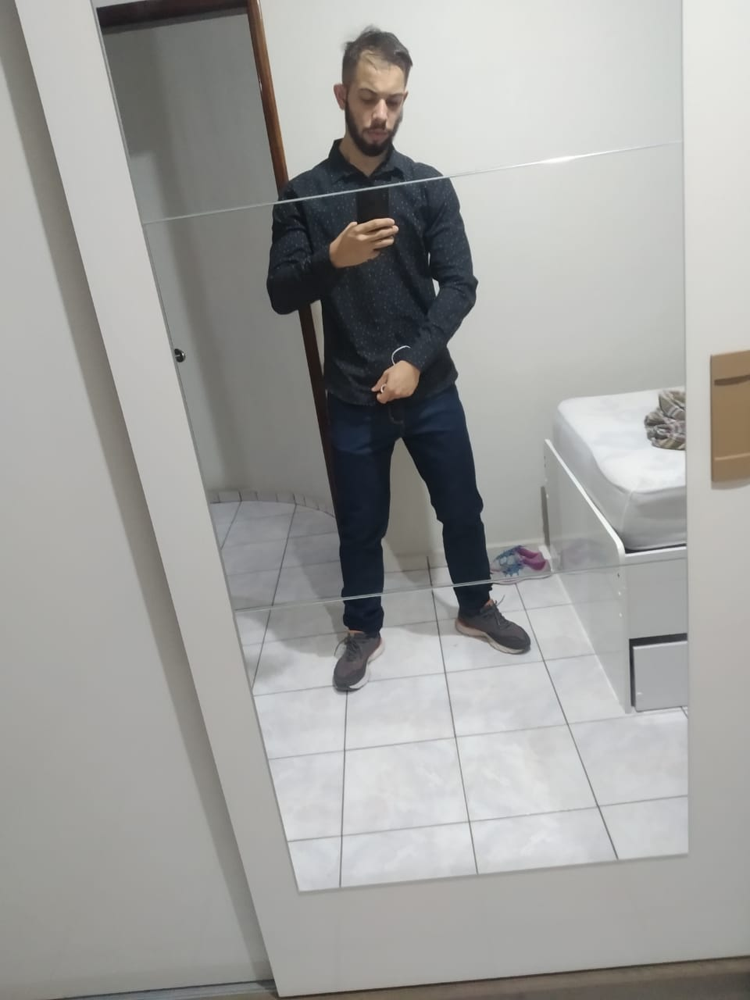
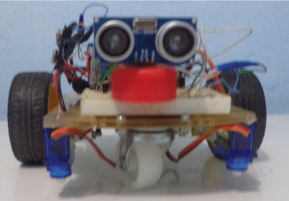
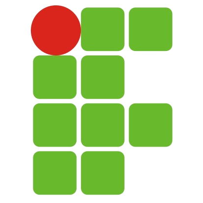
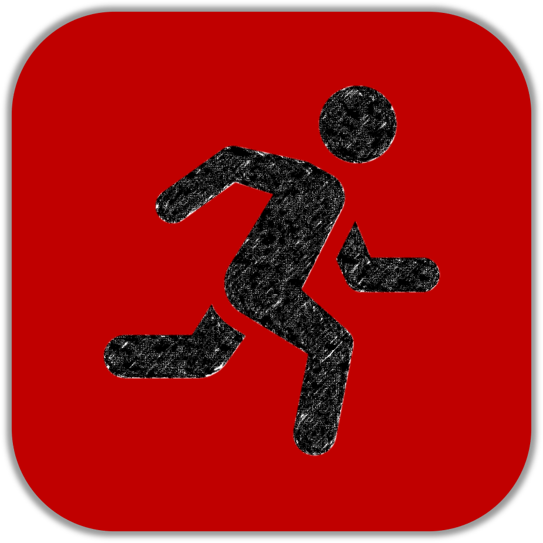
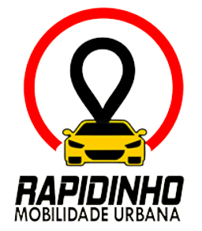
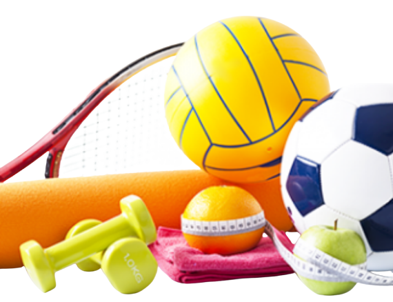
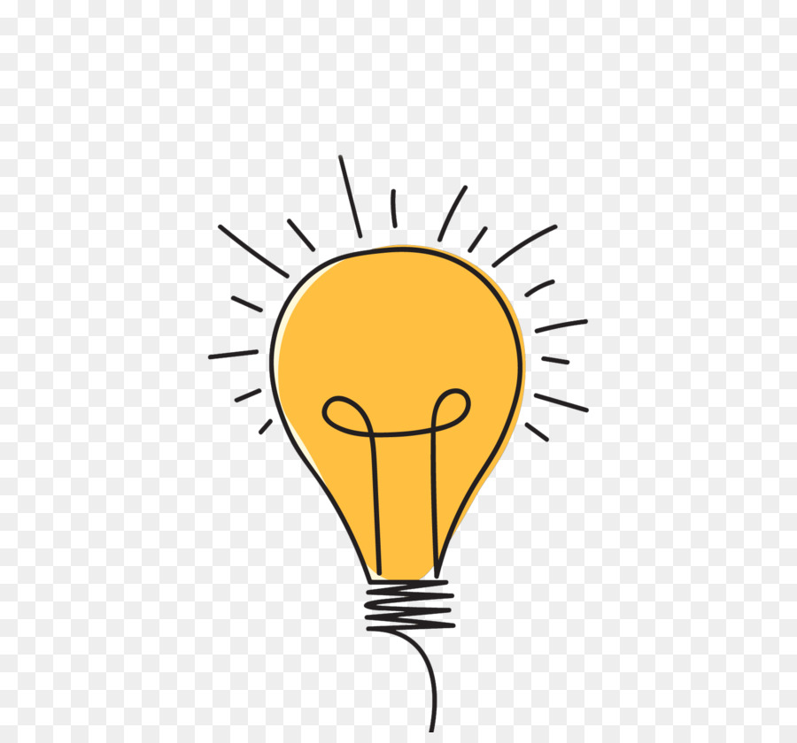

Lucas Barros
Computer Technical and Software Developer
ABOUT ME
|  |
Eu sou um estudante de Engenharia de Computação na Universidade Federal da Paraíba (UFPB). Meus estudos e trabalhos se concentram na área de Internet das Coisas (IoT) e desenvolvimento, amo empreendimento e inovação.
|
MY WORKS
Toddy Teddy JhonnyEste foi o nome dado ao robô desenvolvido por mim e alguns colegas que foi resultado de um projeto de pesquisa. Este robô é capaz de seguir instruções enviadas pelo aplicativo também desenvolvido por nós. O aplicativo recebe instruções, interpreta e envia ao Tod, que, por sua vez, caso o código não apresente erros, segue aos comandos. O que você vê na foto é um protótipo. |

|
|

|
IF Para TodosEsse é um aplicativo especial. Foi o primeiro aplicativo que desenvolvi de forma completamente autônoma e conseguiu uma boa visibilidade, apesar de ainda ter deixado muito a desejar. Era visado para auxiliar alunos do ensino fundamental no estudo para o exame seletivo para ingressar no instituto. |
At HomeÉ um aplicativo desenvolvido no início da pandemia. Pensando nas dificuldades que existem, sobretudo em um tempo onde deve-se existir um cuidado extra com a saúde física e mental, o aplicativo At Home foi desenvolvido em Flutter trazendo uma gama de atividades físicas, que podem ser adequadas conforme a sua necessidade. |

|
|

|
FreeDyAplicativo para realizaçao de entregas. Ainda está em trabalho de desenvolvimento, em breve terei novidades ;) |
MY ABILITIES
|
|
IoTTive um contato próximo dentro do projeto de pesquisa da universidade e desde então meu interesse só aumentou na área. |

|
RobóticaDesde o ensino médio venho aproximando o contato com o Hardware. Arduino foi a porta de entrada. |

|
Desenvolvimento MobileProgramação Mobile se tornou para mim e cada vez mais vem se firmando como algo de extremo interesse. |

|
Full StackTrabalhar de ponta a ponta, desde a modelagem, o design, até todo o funcionamento "por trás dos panos" é algo que gosto e ganho proficiência através de meus projetos. |
SPARE TIME
Atividades FísicasA prática de atividades físicas é algo novo pra mim, mas sem dúvidas incluo na minha principal atividade de lazer. Seja correr, seja ir para a academia ou mesmo se exercitar em casa, são atividades que melhoram minha saúde física e mental, além de tornar meu dia bem produtivo. |

|
AssistirAcho que ninguém resiste a um bom filme ou a uma boa série em fins de semana quando se é possível. Assistir é uma de minhas atividades preferidas, momento de relaxar a mente e descontrair. |
|
ProduzirAs vezes, mesmo no momento de lazer, me sinto produtivo e resolvo fazer coisas de meu agrado, isto inclui programar, resolver problemas, pensar em estratégias de negócios para minhas ideias, etc... |

|